Combat Sports
Combat sports play a significant role in my life. I have been involved in various combat sports, including wrestling, BJJ, Judo and Muay Thai. I have competed in local, regional, national, and international competitions, where I have earned several medals and awards. Without the involvement of combat sports in my life, I would not have developed the discipline, focus, and perseverance that I have today. It has also taught me countless lessons such as the importance of respect, humility, and sportsmanship, which I carry with me in all aspects of my life.
Videos & Photos
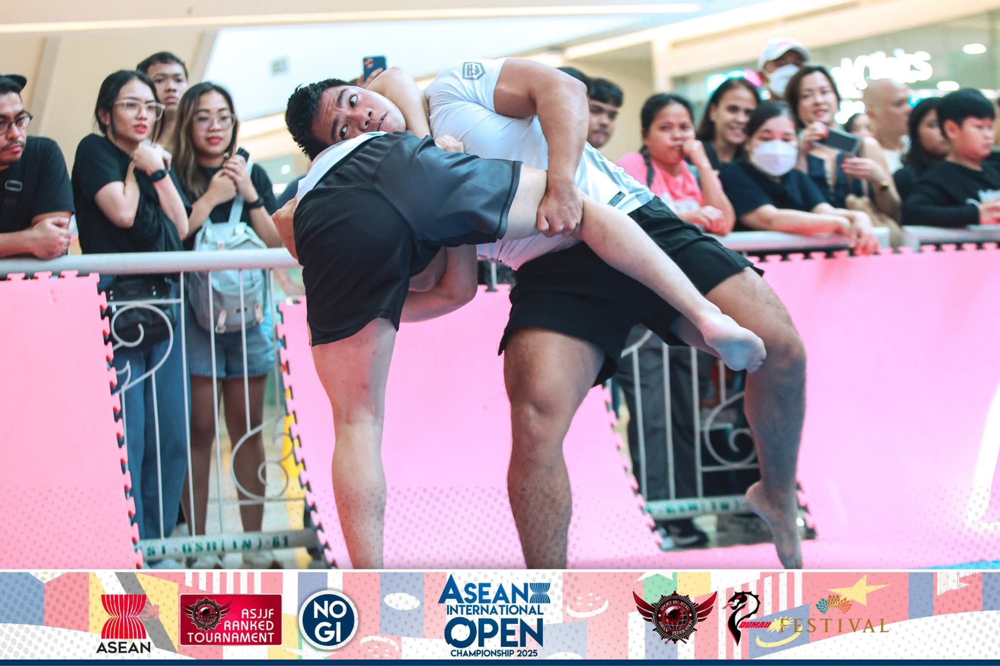
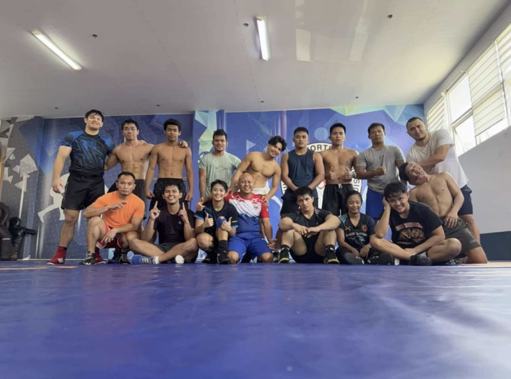
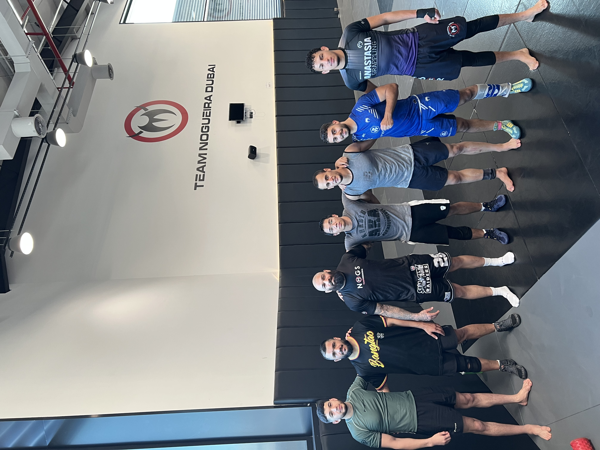
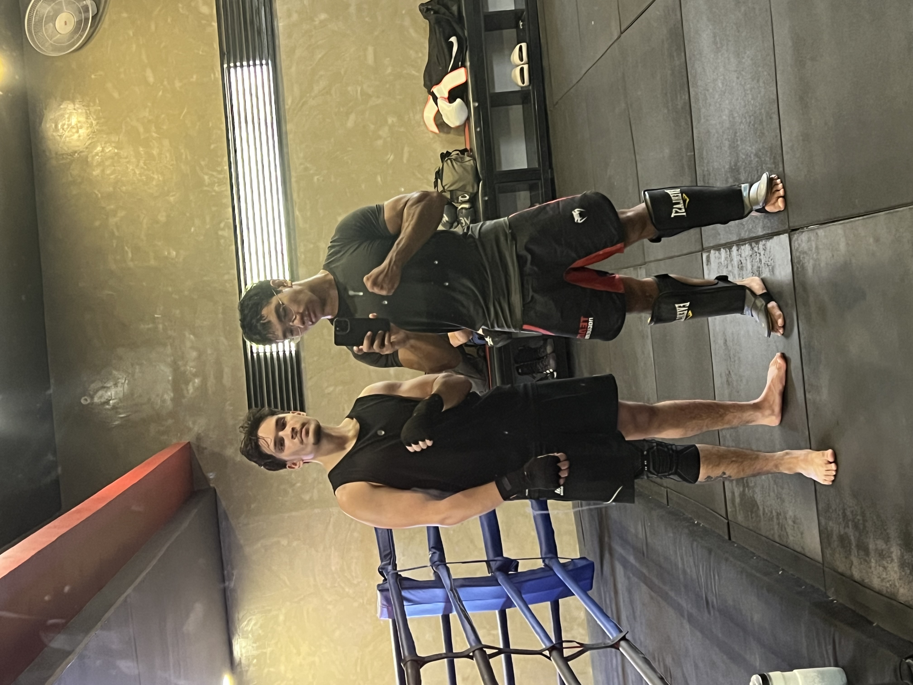
Custom Motorcycles
I love motorcycles and have a particular interest in custom motorcycles, and custom motorcycle culture. I enjoy learning about motorcycle engineering, modifications, fabrication, paint work, and different styles of custom motorcycles. I also enjoy working on my own motorcycle and exploring different ideas for future builds.
Videos & Photos
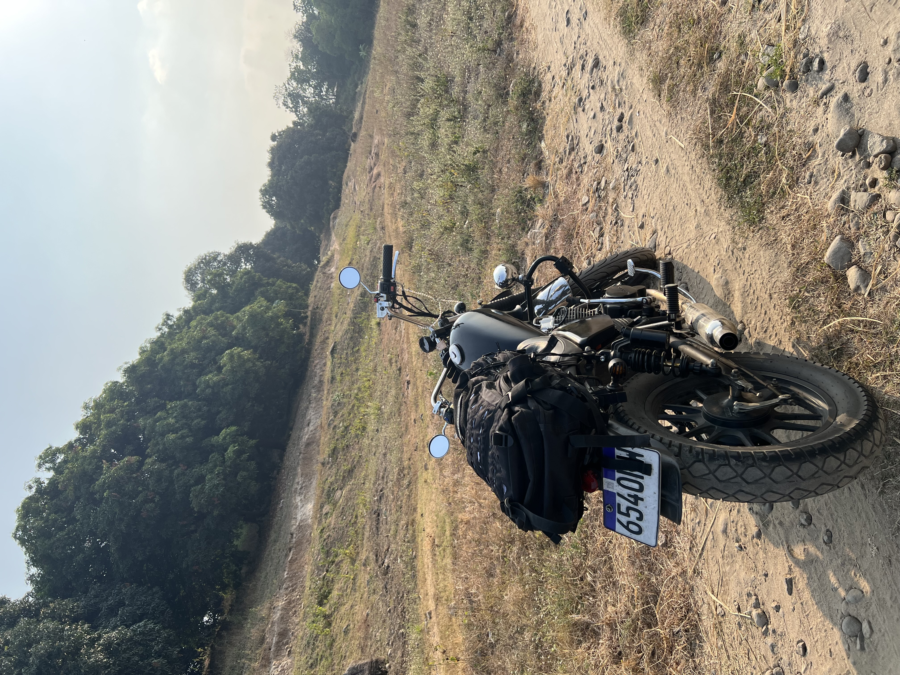
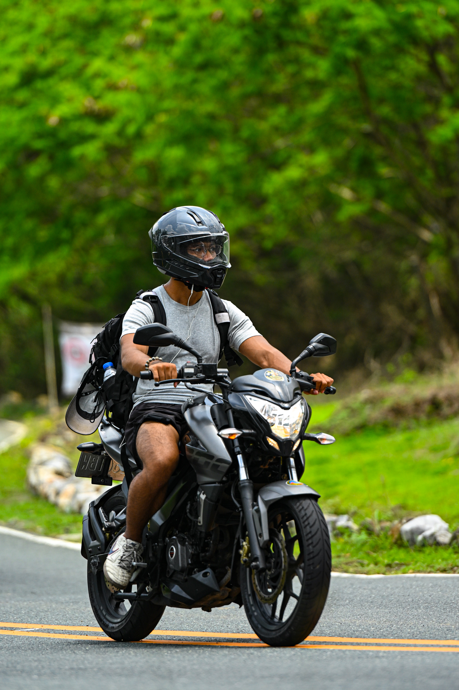
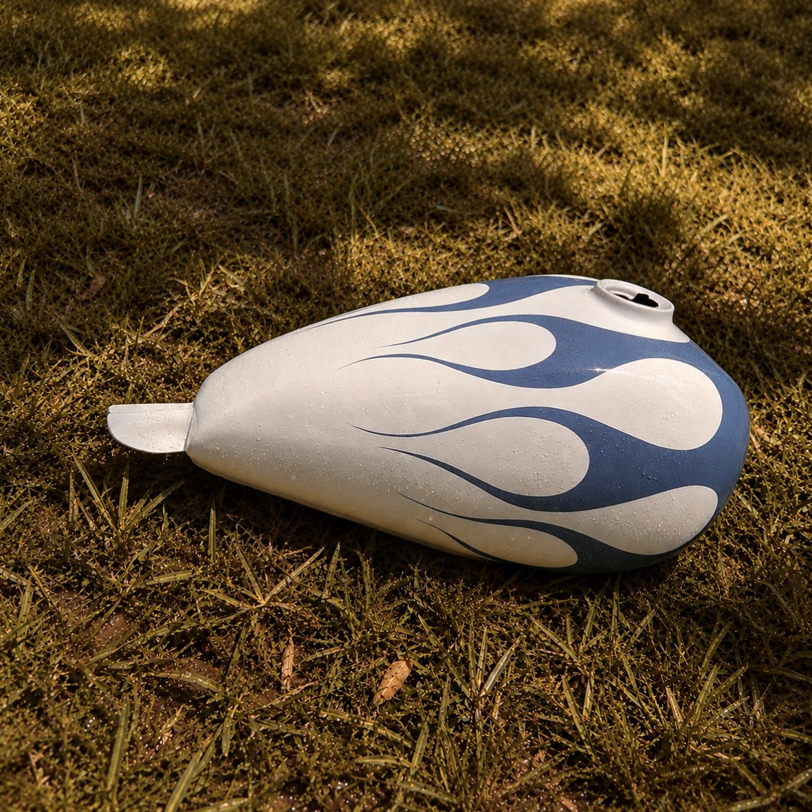
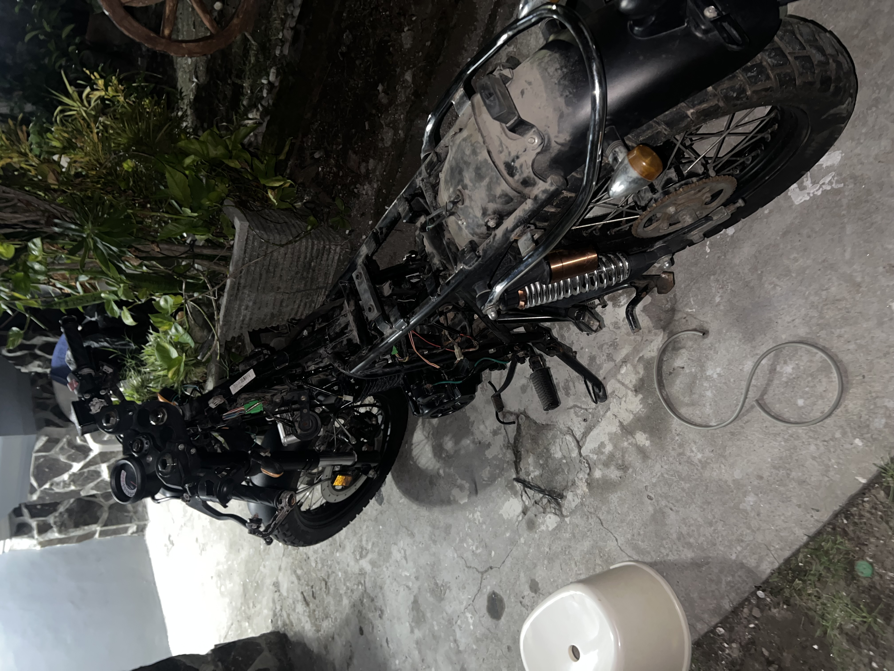
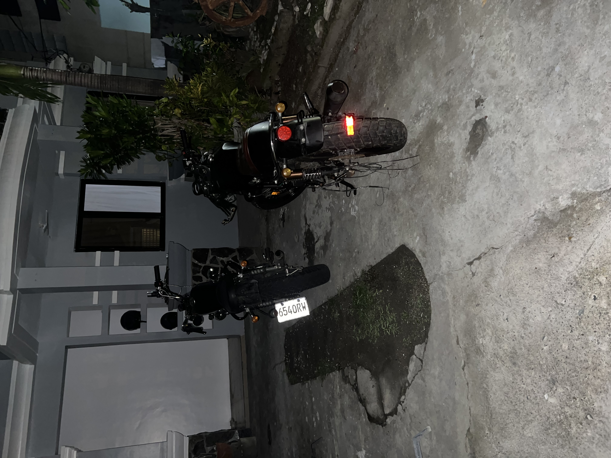
Graphic Design
I took an interest in graphic design during my high school years, when I would create designs for the video games I would develop, including the UI, logos, and other visual elements. I have since expanded my skills and knowledge in graphic design, and I now enjoy creating designs for a variety of purposes. Now I use graphic design to create clothing designs, logos, posters, social media graphics, and other visual content for personal projects, freelance work and most recently, for my custom motorcycle parts business.
Photos
.png)
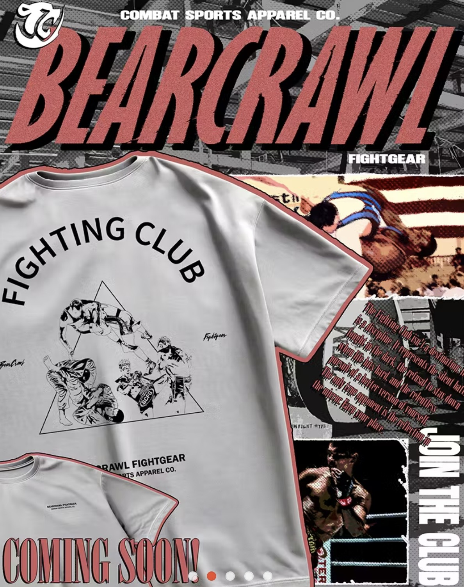
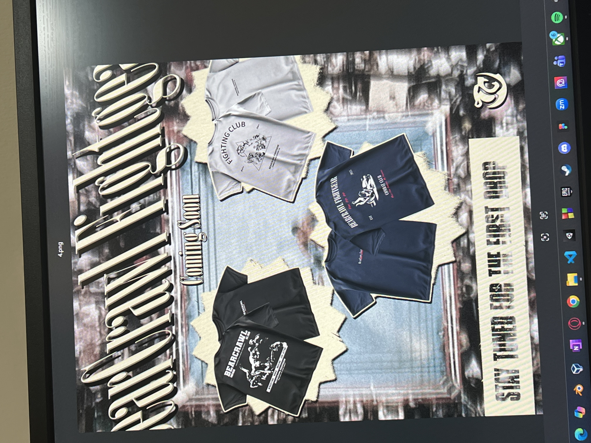
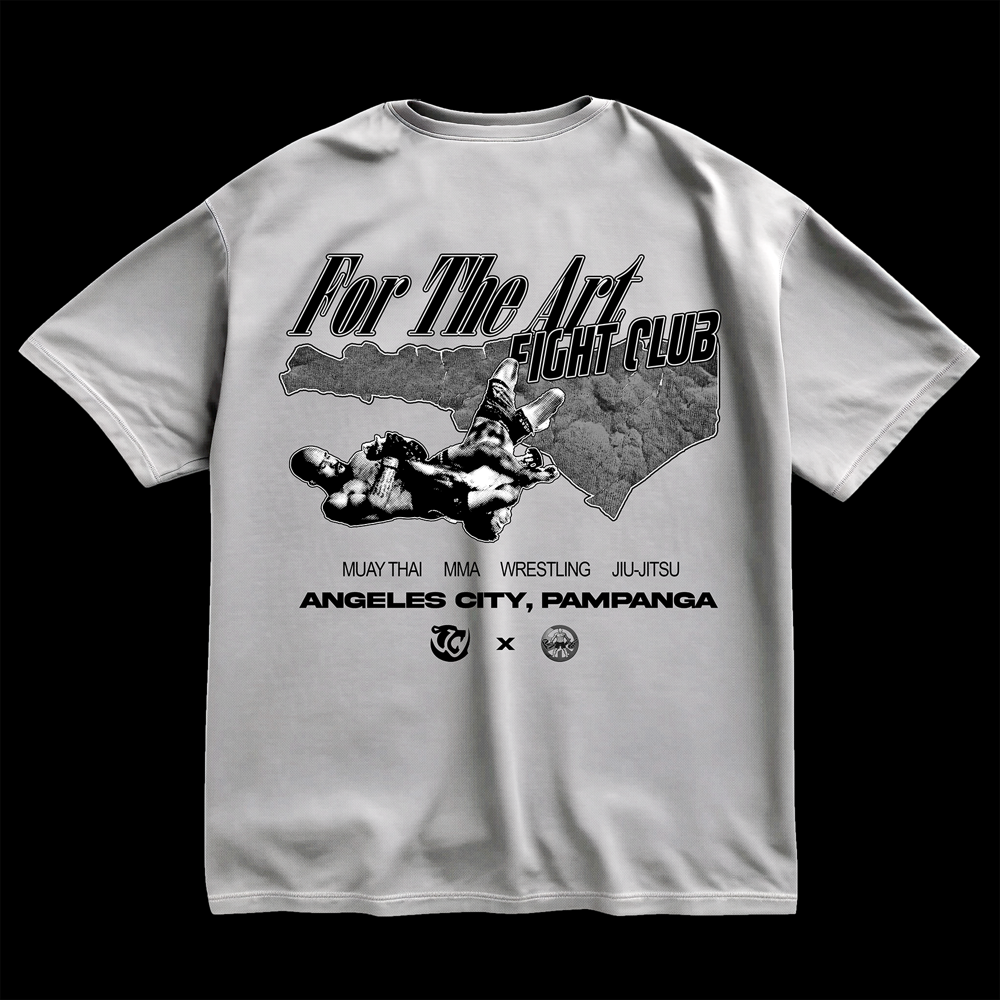
Cinematography
Cinematography is something that I have long been interested and I previously believed that I needed to have a good camera and equipment to start learning about cinematography. Instead of waiting to have the best equipment, I decided to start learning about cinematography and experimenting with the equipment I had available. As of the moment I do not have any photos/work to show however, I am currently working on a project that will allow me to showcase my cinematography skills and knowledge through a short film of my life.